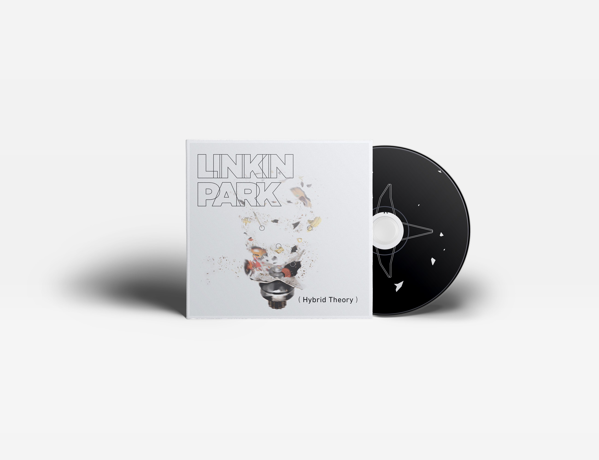
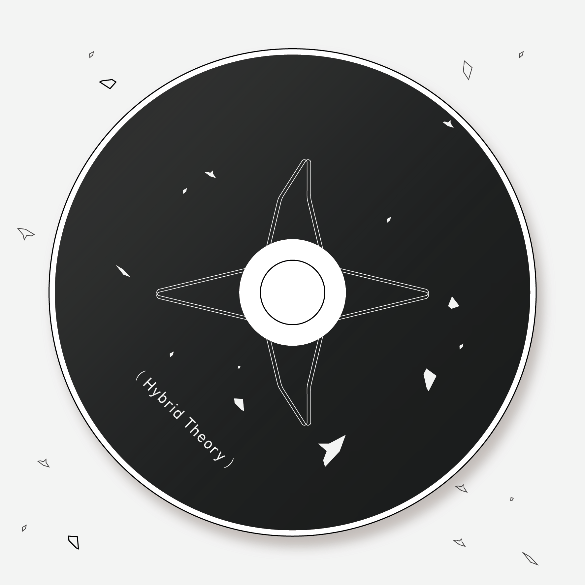

Linkin Park
CD cover concept
- Date: 2012
- Design: Sheng Pan
- Art Direction: Sheng Pan

唱片一播放，另類的搖滾灌入耳中。聯合公園的音 樂就如同綜合的果汁，將電吉他、鼓、混音唱盤與 饒舌等巧妙地結合在一起。
以果汁機中的旋轉刀片營造出音樂演奏的過程，不 同於聯合公園以往灰暗、酷炫的封面，我希望以更 具體的方式描述這張專輯。

